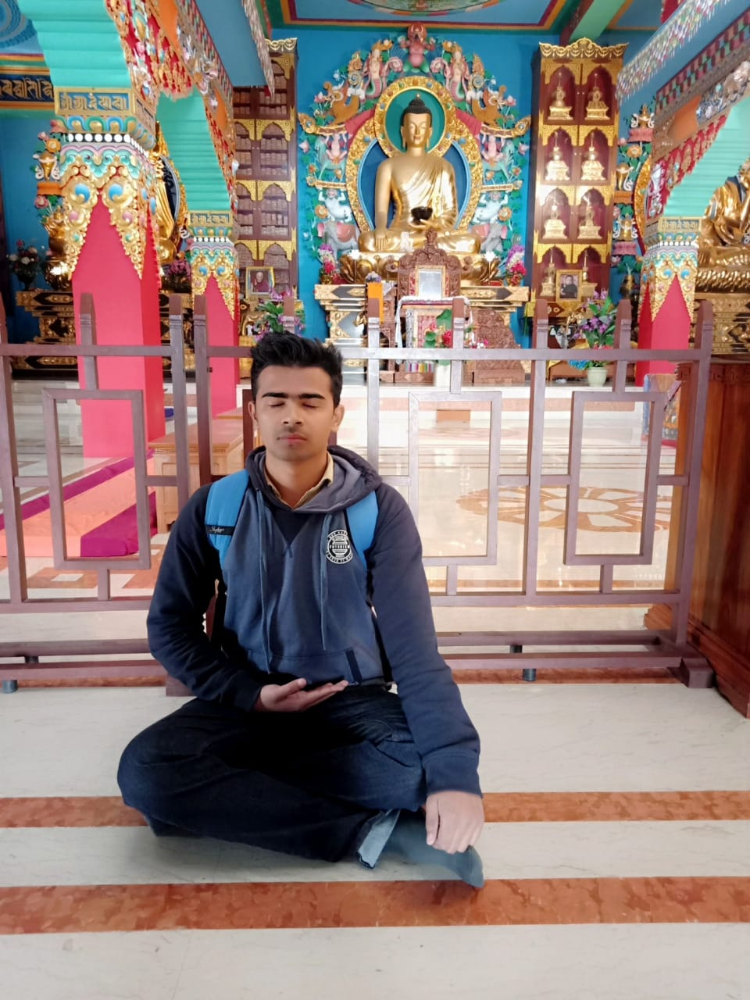

Good lessons from my fav books
"The Alchemist" by Paulo Coelho
- When you have intense contact of love with nature or another human being,like a spark,then you understand that there is no time and that everything is eternal.
- Always follow your personal calling.It is God's blessing,it is the path that God chose for you here on Earth.
- Actually peaople says that our dream path is much difficult.But in reality it is the most easiest path than any other path,except that our whole heart is in journey.
- Intense,unexpected sufferings in the following of our dream passes more quickly than suffering that is apparently bearable;the latter goes on for years and,without our noticing,eats away our soul, until one day,we are no longer able to free ourselves from the bitterness and it stays with us for the rest of our lives.
- Dont always think about your ultimate goals.Enjoy the every moment of your journey.
- Everything on this earth has energy.You can also communicate with inanimate objects.
- To die alive is to take risks.To do something that sometimes scares you but you should do because you may like or you may not like.
"Believe in Yourself" by Dr Joseph Murphy
- You can develop the right mental attitude when you realize that nothing externally can upset you or hurt you without your mental consent.
- The greatest and richest art galleries in the world is the galleries of your mind devoted to God's truth and Beauty.
- Imagination is the river enabling you to flow back psychologically to God.
- As a man imagines and feels,so does he become.
- There is a formula for cure of every disease and that is imaination plus belief.
- Let your words be 'like apples of gold in pictures of silver.'Inshort let your words be as a honeycomb,sweet,to the ear and pleasant to the bones.
Author info
Name-Akash kumar

Age-20 yrs
cod mobile id-yokatta001